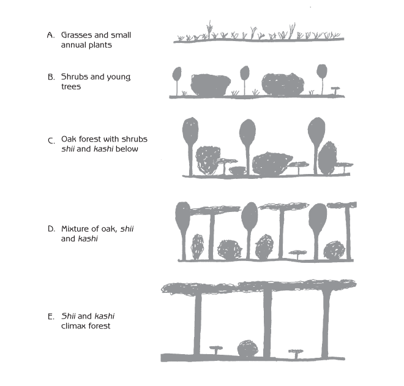
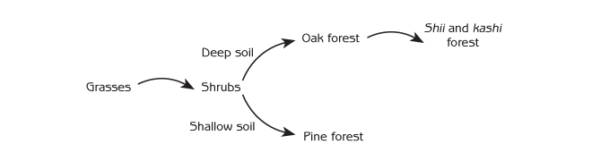
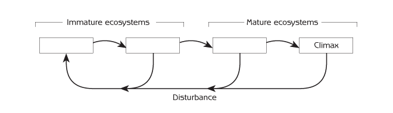
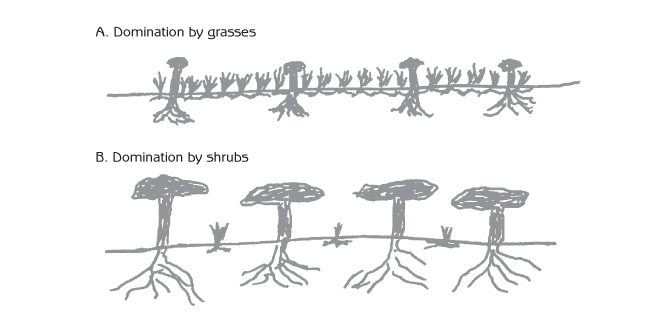
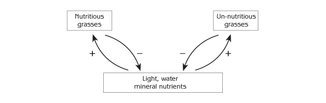
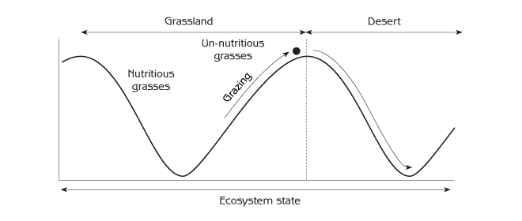
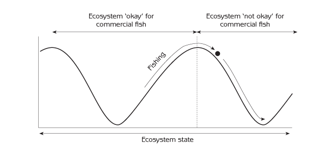
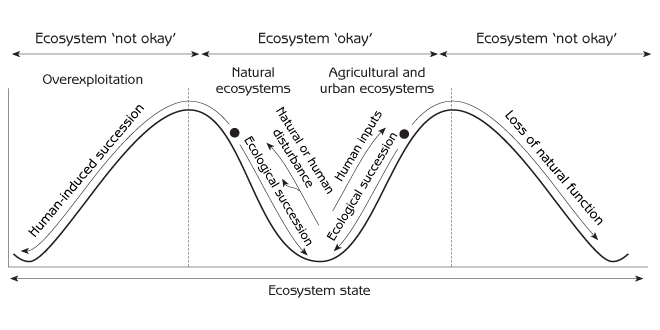
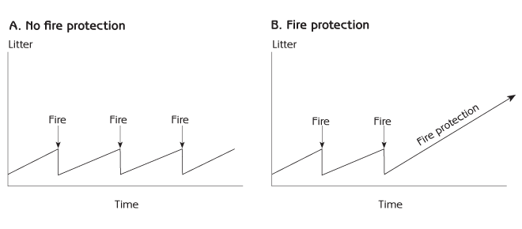
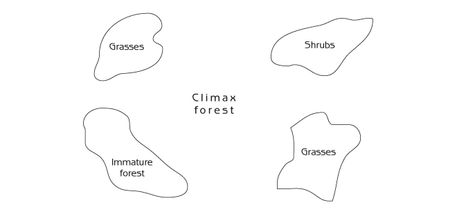

Human Ecology
Basic Concepts for Sustainable Development
Author: Gerald G. Marten
Publisher: Earthscan Publications
Publication Date: November 2001, 256 pp.
Paperback ISBN: 1853837148
Hardback SBN: 185383713X
Chapter 6: Ecological Succession
Natural processes continually change ecosystems. The changes can take years or even centuries, working so slowly that they are scarcely noticed. They have a systematic pattern generated by community assembly, following an orderly progression know as ecological succession, another emergent property of ecosystems.
Ecosystems change themselves and people change ecosystems. People change ecosystems to serve their needs. Intentional changes by people can set in motion chains of effects that lead to further changes - human-induced succession. Sometimes changes are unintended. They can be unwanted and they can be irreversible. This chapter will give three examples of human-induced succession:
- Overgrazing and pasture degradation.
- Overfishing and replacement of commercially valuable fish by trash fish.
- Severe forest fires when forests are protected from fires.
Since ecological succession can be of immense practical consequence, humans have responded by developing a variety of ways in which to integrate their use of ecosystems with the natural processes of succession. Modern society uses intensive inputs to maintain agricultural and urban ecosystems by opposing the natural processes of ecological succession. Many traditional societies have drawn on centuries of experimentation and experience to develop strategies that take advantage of ecological succession in ways that allow them to use fewer inputs. This chapter will describe examples from traditional management of village forests and traditional agriculture.
Ecological Succession
Do places with the same physical conditions always have exactly the same ecosystems? The answer is ‘no’. Firstly, random elements in biological community assembly can lead to different ecosystems. Secondly, ecosystems experience slow but systematic changes as community assembly proceeds. A single site has different biological communities, and therefore different ecosystems, at different times. The slow but orderly sequence of different biological communities at the same site is ecological succession. Each biological community is a stage of ecological succession.
Change from one biological community to another can happen because:
- Smaller species of plants and animals generally grow and reproduce rapidly. Larger plants and animals take more time to grow, and their population growth is slower. As a result, the rapidly growing plants and animals populate a site first, and the slower ones take over later. For example, if a fire or logging destroys a forest, there will be many species of grass growing on the site within months because grasses grow quickly. Later, shrubs grow over the grasses, and after that trees grow over the shrubs.
- A biological community can create conditions that lead to its own destruction. For example, as trees grow older, they become weak and vulnerable to destruction by insects or diseases. When this happens, a biological community ‘grows old’ and ‘dies’, and another biological community takes its place.
- One biological community can create conditions that are more suitable for another biological community. A biological community can change the physical or biological conditions of a site, making it more favourable for another biological community. One biological community therefore leads to another.
- A biological community can be destroyed by natural or human-generated ‘disturbances’ and replaced by another biological community. Fires, storms and floods are examples of natural disturbances. Human activities such as logging or clearing land to make agricultural or urban ecosystems can also destroy a biological community. Activities such as excessive fishing or livestock grazing can change a biological community so much that it is replaced by a different community.
Earlier stages of ecological succession are known as ‘immature’. They are simpler, with fewer species of plants and animals. As community assembly progresses, the biological community becomes more complex. It accumulates more species, many of them more specialized with regard to diet and the way they interact with other plants and animals in the food web. The ecosystem consequently becomes more ‘mature’. The last stage of succession is a climax community. Climax communities do not change to another stage by themselves. The progression from immature biological communities to mature and climax communities is ecological succession.
An example of ecological succession
Ecological succession typically begins when the existing biological community has been cleared away by human activity or natural disturbance such as a fire or severe storm. This may happen over a large area, but succession can also begin in a small patch of forest that is opened up where an old tree has fallen. In western Japan, short grasses and small annual flowering plants generally mark the first stage of succession (Figure 6.1A). After a few years, they may be outgrown by taller grasses. Eventually, young trees and shrubs grow up through the grasses to form a mixture of tree saplings and shrubs that is dense enough to shade out most of the grass (Figure 6.1B). Some of the saplings ultimately grow above the shrubs to form a forest. Some of the shrubs disappear, while others survive between the trees.
If the soil is deep, the first forest is typically a mixture of deciduous oaks with other trees and shrubs (Figure 6.1C). The oaks and most of the other trees are eventually replaced by shii and kashi trees to form a climax forest (Figure 6.1E). (Shii and kashi are broadleaf evergreen trees in the beech family.) As the plant species in the biological community change, the animal species also change because particular species of animals use particular species of plants for food or shelter.

Why does oak forest appear first in ecological succession, and why do shii and kashi eventually replace it? Shii and kashi grow slowly, but they live for hundreds of years. With time they can grow to a great height. Oak trees grow rapidly if they have plenty of sunlight, but they do not grow as tall. When shii, kashi and oak seedlings grow together in an open immature ecosystem (Figure 6.1B), the large amount of sunlight favours oaks, which grow faster than the shii and kashi. The first forest in the ecological succession is therefore oak trees with shrubs and small shii and kashi trees beneath them (Figure 6.1C). Shii and kashi can survive in the shade of oak trees, and they slowly increase in height. After about 50 years the forest is a mixture of oaks with shii and kashi all about the same height (Figure 6.1D). By this time some of the oak trees are old and senile and some may be covered with vines that ‘smother’ them. The oaks begin to decline.
Eventually the shii and kashi grow above the oaks to form a dense leaf canopy that shades everything below. Oaks cannot survive in the shade of shii and kashi, so the biological community changes to a climax forest of tall shii and kashi with a scattering of young shii and kashi and shade-tolerant shrubs below (Figure 6.1E). The entire progression from a grass ecosystem to a mature shii and kashi forest takes 150 years or more. Because younger shii and kashi trees grow into the space that opens up when an old tree falls down, the climax forest stays more or less the same unless it is destroyed by human activity, fire or some other severe disturbance.
The ecological succession on shallow soil in western Japan is different from the succession on deep soil (Figure 6.2). Oaks, shii and kashi require deep soil to grow tall, but pine trees do well even if the soil is shallow, provided they have plenty of sunlight. The climax ecosystem on shallow soil is pine forest. Pine saplings may also thrive in open sunny areas with deep soil, but other trees eventually predominate on deep soil because pines cannot tolerate their shade.

It is evident then that a landscape mosaic contains different biological communities at different places not only because of spatial variation in physical conditions but also because of ecological succession. Sites with similar physical conditions have similar ecological successions, but sites with similar physical conditions can have very different ecosystems because they are in different stages of the same succession.
Because climax communities stay more or less the same for many years, one might expect a lot of shii and kashi forest in western Japan. The regional landscape was dominated by shii and kashi climax forest in the distant past, but people cut down most of the shii and kashi forests many centuries ago. Shii and kashi, including some very old and large trees, are scattered across the landscape today, but fully developed shii and kashii climax forests are unusual. Remnants of the climax forests remain primarily in sacred groves around temples and shrines.
Ecological succession as a complex system cycle
Ecological succession is cyclic (see Figure 6.3). It follows the four stages of the complex systems cycle described in Chapter 4: growth; equilibrium; dissolution; and reorganization. Immature biological communities such as grasses or shrubs are the growth stages of ecological succession. Because immature communities have relatively few species, newly arriving species do not face strong competition from species already in the community. Most new arrivals survive the community assembly process, and the number of plant and animal species in the community increases rapidly. The most successful species in immature ecosystems are ones that can grow and reproduce quickly with an abundance of resources.

Ecosystems mature as additional species of plants and animals become established over the years through the community assembly process. It becomes increasingly difficult for newly arriving species to join the mature ecosystem because it has so many species, which already occupy all potential ecological niches. Newly arriving species can survive in the mature ecosystem only if they can outcompete and displace species that are already there. Eventually the biological community changes little. This is the climax community (equilibrium). It has the largest number of species, and they are all efficient competitors, good at surviving with limited resources. A climax ecosystem may last for centuries, provided outside disturbances such as fire or severe storms are not too damaging.
However, sooner or later, the climax community is destroyed by some kind of disturbance. This is dissolution. Most plant and animal species disappear from the site. Then comes the reorganization stage. Because many niches are empty at this time, competition is low and survival is easy for newly arriving species if the site has suitable physical conditions and the biological community has an appropriate food source. The reorganization stage is a time when the community might acquire one group of plants and animals, or a very different group, depending upon which species happen to arrive at the site by chance during this critical time. Ecological succession then proceeds from immature to mature communities (growth) until there is another disturbance or succession once again reaches the climax community.
The disturbances that cause mature communities to be replaced by earlier stages of succession vary in scale. As a result, landscape mosaics have patches of many different sizes. For example, lightning can strike one tree in a forest. The tree dies and falls over, opening up a small gap in the forest, which is occupied by early successional species. At the other extreme, a severe typhoon or fire, or large-scale logging, can tear down hundreds of square kilometres of forest.
Interaction of positive and negative feedback in ecological succession
This section examines the tension between positive and negative feedback in ecological succession. Negative feedback tends to keep ecosystems the same (ecosystem homeostasis) but they change from one stage to another as positive feedback takes effect.
We will look once again at the succession of an ecosystem from grass to shrub community, beginning with an ecosystem in which the ground is carpeted with grasses (see Figure 6.4A). Shrubs may be present, but they are young and scattered. The ecosystem may stay this way for 5 to 10 years, or even longer, because shrub seedlings grow very slowly. They grow slowly because grass roots are located in the top soil, while most of the shrub roots are lower down. Grasses intercept most of the rainwater before it reaches the roots of the shrubs. Because the grasses limit the supply of water to the shrub seedlings, they maintain the integrity of the ecosystem as a grass ecosystem. At this stage, negative feedback acts to keep the biological community the same.
However, after a number of years, some of the trees and shrubs, which have been growing slowly, are finally tall enough to shade the grasses below them (see Figure 6.4B). The grasses then have less sunlight for photosynthesis, and their growth is restricted. This results in more water for the shrubs, which grow faster and shade the grasses even more. This process of positive feedback allows the shrubs to take over. They now dominate the available sunlight and water, and the grasses decrease dramatically.

This example shows how negative feedback can keep an ecosystem in one stage of ecological succession until there is enough change in some part of the ecosystem to trigger a positive feedback loop that changes the ecosystem to the next stage of succession. This example is about much more than grasses, shrubs and trees. The same kind of interplay between positive and negative feedback is responsible not only for ecological succession but also for much of the behaviour of all complex adaptive systems. Ecosystems, social systems and other complex adaptive systems stay more or less the same for long periods because negative feedback predominates until a small change triggers a powerful positive feedback loop to change the system rapidly. Negative feedback then takes over to hold the system in its new form.
Urban succession
Urban ecosystems and their social systems change in ways that are similar to ecological succession. As a city grows, every neighbourhood within it experiences changes in its social system. A neighbourhood can change drastically over a period of 25 to 100 years. It may be primarily residential during one time and become commercial or industrial during another. Neighbourhoods experience growth, vitality and progress during certain times, and at other times they deteriorate as the focus of growth and vitality shifts to other neighbourhoods. The same is true for entire cities. Cities grow and decline as the focus of growth and vitality shifts from one city to another.
Human-Induced Succession
Human activities can have a powerful effect on ecosystems and the way they change. This is known as human-induced succession, which can lead to changes that are often unexpected and sometimes seriously detrimental to the benefits that people derive from ecosystems. Pollution of the lagoons that surround small South Pacific islands provides a striking example. Many South Pacific communities now consume imported packaged and canned foods, disposing of the empty cans and other waste in dumps. Rainwater runoff from the dumps pollutes the lagoons, reducing the quantity of fish and other seafood. With less seafood, people are forced to buy more and more cheap canned food, the pollution becomes worse and the lagoon has fewer fish. This positive feedback loop changes the lagoon ecosystem while also degrading the people’s diet.
Pasture degradation due to overgrazing
Another example of human-induced succession is the effect of overgrazing on pasture ecosystems. Overgrazing occurs when a pasture ecosystem has more grazing animals such as sheep or cattle than its carrying capacity for those animals will support.
Pastures usually have a mixture of different grass species that differ in their nutritional value. Many species of grass are not nutritious as a defence against being eaten by animals. Some species of grass are even poisonous. Because grazing animals know which grasses are best to eat and which are not, they select the nutritious species and leave the rest uneaten. Different species of grass in the same pasture compete with each other for mineral nutrients in the soil (mainly nitrogen, phosphorus and potassium), water and sunlight (see Figure 6.5). A mixture of different grass species can coexist in the same ecosystem as long as no species has an advantage. However, if some species have a disadvantage, they will disappear and the other species will take over.

What happens when too many cattle graze for a prolonged period of time? Because cattle select nutritious grasses, these species have a disadvantage in their competition with grasses that are not nutritious. The population of nutritious grasses decreases, leaving more resources for other species to grow and increase in abundance. A positive feedback loop is set in motion for grasses that are not nutritious to replace nutritious grasses. By tracing the arrows through the diagram in Figure 6.5, it is possible to see that each species of grass has a positive feedback loop that passes first through its ‘food’ in the soil and then through the other species of grass. This replacement process can take years, but when it is finished, the pasture has changed from an ecosystem with a mixture of grasses to an ecosystem dominated by grasses of low nutritional value. As a result, the carrying capacity for cattle is much lower than it was before.
Desertification
Grass ecosystems are an early stage of succession in regions where the mature ecosystems are forests. However, grass ecosystems are climax ecosystems in grassland regions, where there is not enough rainfall to support a forest. Desert ecosystems are climax ecosystems where there is not enough rainfall even for grassland. Desertification is the change from a grassland ecosystem to a desert ecosystem in a region where the climate is suitable for grassland. There is enough rainfall for grass, but overgrazing can change the grassland to desert.
In a healthy grassland ecosystem, all of the ground is covered by grasses, which protect the soil from erosion due to wind or rain. If there are too many cattle, grass cover is reduced. Bit by bit, wind and rain carry away the fertile topsoil from ground that is no longer protected by grasses. When topsoil is lost, the soil becomes less fertile and its capacity to hold water declines. Grasses then grow more slowly and are replaced by shrubs whose roots can reach water deeper in the soil. Because the shrubs are not nutritious for cattle, the carrying capacity for cattle declines. People may then use goats instead of cattle because goats can eat shrubs that cattle cannot. Goats can also eat grass, which they pull out by the roots. If there are too many goats, they destroy the remaining grasses, and more ground is left without its protective cover. There is more erosion, and eventually the soil is so badly degraded that grass can no longer grow at all. The grassland has changed to a desert with scattered shrubs (see Figure 6.6)

These changes are slow. It can take 50 years or more for a grassland ecosystem to become a desert ecosystem that provides very little food for people. The entire ecosystem changes. Desert shrubs replace grasses and the rest of the biological community changes because it depends upon the plants. Physical conditions change as well, often irreversibly. Because degraded soil cannot hold enough water to support the growth of grasses, a desert ecosystem may not change back to a grassland ecosystem, even if all the grazing animals are removed.
Worldwide, about 50,000 square kilometres of grassland change to desert every year. The causes are complex and varied, but overgrazing is often a major factor. Why do people put too many grazing animals on grasslands when the consequences are so disastrous? The main reason is human overpopulation. The human population in many grassland areas already exceeds the carrying capacity of the local ecosystem. People use too many grazing animals because they need the animals to feed themselves now, even if it means less food in the future. Desertification has contributed to famine in places such as the African Sahel. This is an example of population overshoot that can cause the human population and its ecosystem to crash together.
Fisheries succession
Commercial fishing can have far-reaching effects on fish populations in oceans and lakes. If fishermen focus heavy fishing on a few species of high commercial value, those species have a higher death rate than other species of fish with which they compete for food resources. The populations of commercially valuable fish decline and are replaced by trash fish or other aquatic animals of little or no commercial value. This is known as fisheries succession. It is basically the same ecological process as replacement of nutritious grasses by species that are not nutritious because of overgrazing. During the 1940s and 1950s, the sardine population off the California coast declined and was replaced by anchovies. While recognizing that long-term climatic or biological cycles may have a role in this story, it appears the change was primarily due to overfishing. In a similar fashion, sardines replaced anchovetas off the coast of Peru and Chile when there was heavy fishing during the 1960s and 1970s, and similar stories have occurred numerous times with other species of fish in oceans and lakes throughout the world.
When this happens, a decline in the population of a particular fish species can set in motion a chain of effects through the aquatic ecosystem that alters the biological community in many other ways. Physical conditions sometimes change as well. The fish that disappeared may not be able to return even after overfishing has ceased. When people damage part of an ecosystem, it adapts by changing to a different kind of ecosystem - one that may not serve human needs as well as before. A multitude of changes through the ecosystem have ‘locked’ it into a new biological community (see Figure 6.7).

The ‘okay/not okay’ principle of human-induced succession
Desertification and fisheries succession are examples of a more general emergent property of ecosystems. Human-induced succession can make ecosystems switch from a stability domain that serves human needs (‘okay’) to another stability domain that does not (‘not okay’).
Ecosystems continue to be ‘okay’ as long as people do not change them too much. If an ecosystem is altered drastically, natural and social forces can transform it even more to a different stability domain that may be okay but often is not.
Ecosystems are impressively resilient in their capacity to continue functioning and providing services over a range of uses and even moderate abuse. Moderate levels of fishing, grazing, logging or other uses may alter the state of a natural ecosystem, but the ecosystem remains in the same stability domain and continues to provide fish, forage or wood (see Figure 6.8). The same is true for agricultural and urban ecosystems that include a healthy natural biological community, such as animals and microorganisms that maintain soil fertility on a farm, or trees that remove pollution from the air in a city. However, if an ecosystem is transformed too much, a chain of effects can be set in motion through ecosystems and social systems that changes the ecosystem even more. Fish, forage, forests, soil animals or urban trees can disappear. The ecosystem state passes from one stability domain to another, and the new ecosystem may not serve people’s needs as it did before.

Managing Succession
Traditional forest management in Japan
Human-induced succession is not always detrimental. People who know how to interact with ecosystems on a sustainable basis can encourage ecosystems to change - or not change - in ways that best serve their needs. They can use natural processes to change ecosystems to a stage of ecological succession that they want. People can also structure their activities in the ecosystem so that the biological community remains at a desired stage of succession instead of developing into a stage that they do not want.
The traditional Japanese satoyama system (literally ‘village/mountain’) is an example of sustainable landscape management that for many centuries provided essential materials for village life. The villagers maintained young oak forests and patches of a tall perennial grass (susuki) as a major part of their landscape because of the valuable products they provided. The long tough stems of susuki grass were used as thatch for houses and as mulch or compost on the farmers’ fields. Villagers prevented their susuki grass areas from changing to forest by setting them on fire after cutting the grass stems for use. The fire killed young trees and shrubs but the underground roots of the grass survived to sprout soon after the fire.
Village forests were the main source of construction materials, charcoal for cooking food and heating houses, and leaf litter for application as mulch to agricultural fields. Oak forests were more useful than the more mature shii and kashi forests because oaks grow faster. The villagers used a very simple procedure to ensure that they had enough oak forest to meet their needs. Each year they cut all the oaks in a small area, doing so in a way that allowed new oak trees to sprout from the stumps of the cut trees. Because the new oaks could use the large root systems of the cut trees, the new oaks could grow so fast that within 20 to 25 years they were once again ready for cutting. Once the 20 - 25-year-old trees were cut, the same process was repeated, with new trees sprouting from the cut stumps; more oak trees were then ready for cutting in another 20 to 25 years. Because different parts of the forest were cut at different times, the landscape had a mosaic of oak forests of different ages that provided a diversity of forest products and a diversity of habitat for many species of plants, insects, birds and other animals.
Every year the villagers cut all young shii and kashi trees so that they could not grow above the oak trees. In this way they retained oak forest as a major part of their landscape mosaic for centuries. It was essential to cut the oaks every 20 - 25 years. If they waited too long and did not remove shii and kashi, the oaks would eventually be replaced by shii and kashi. If they cut too soon, the oaks would never grow large enough to produce the seeds necessary for new trees. Without new trees the oak forest would eventually disappear and be replaced by other kinds of trees or an earlier stage of succession with grasses and shrubs.
The situation is very different today. For the past 40 years, Japan has imported petroleum and gas instead of using charcoal. Moreover, Japan has imported large quantities of timber from other countries for construction while using less wood from its own forests. Most farmers apply large quantities of chemical fertilizers to their fields instead of mulch from the forest. Oak forests are no longer cut on a regular basis, the trees are becoming senile, and some are starting to die. Oak forests may eventually be replaced by shii and kashi forests.
Forest fire protection
Frequent fires - started mainly by lightning - are a natural part of many forest ecosystems. The seeds of some plants germinate only when stimulated by fire. Dead tree leaves accumulate on the ground to form leaf litter, which provides fuel for fires that are usually started by lightning. When the quantity of litter is small, there is not much fuel, fires burn slowly and are not excessively hot. Most of the leaf litter burns away and some of the leaves on the trees may be burned; however, few trees are killed. If fires kill any trees (usually old trees), young trees quickly grow to fill the canopy gaps.
Fires have an important function for forests. Fallen leaves contain minerals such as phosphorous and potassium that the ashes from a fire return to the soil as mineral nutrients for trees and other forest plants. However, if a forest has too much leaf litter on the ground, a fire can burn at extremely hot temperatures because the large amount of litter provides so much fuel. A fire with too much leaf litter can spread over a large area and burn with such intensity that it destroys all of the trees and buried tree seeds in the soil. When this happens, the forest is destroyed and a grass ecosystem emerges from the ashes. It can take many years before there is forest again, particularly if there is no longer any woodland close by to provide a seed source.
Frequent fires are a negative feedback mechanism that prevents excessive accumulation of leaf litter in forest ecosystems (see Figure 6.9A). Because frequent fires seldom result in serious damage, they are nature’s way of protecting forests from severe fires that could destroy them. This is ‘ecosystem homeostasis’. A forest landscape with frequent natural fires is a mosaic of mature forest with grass and shrub ecosystems, and less mature forest in areas where there were fires in recent years (see Figure 6.10). The kind of ecosystem in each patch depends upon how many years have passed since a fire occurred and how severe it was. People generally consider a varied landscape, punctuated with different kinds of forest and open areas, to be more pleasant than a landscape that is solid forest.


Around 1900, the United States Forest Service initiated a policy of protecting forests from fire because foresters did not understand the value of frequent forest fires. They did not want any tree damage due to fire. For 80 years they put out all forest fires as quickly as possible. More and more leaf litter accumulated on the ground because so much time passed without frequent small fires to get rid of the leaf litter (see Figure 6.9B). By 1980, leaf litter had accumulated within forests to the extent that they were increasingly susceptible to fire. New forest fires became very difficult to control, particularly in the extensive dry areas of Western United States.
The more the forest service tried to protect forests from fires, the worse the problem became because every fire was more difficult to extinguish and could destroy such large areas of natural habitat. Forest protection became increasingly costly because it was necessary to use large numbers of fire fighters, fire trucks and airplanes to drop water. Despite this effort, thousands of square kilometres of forest were sometimes destroyed by a single fire.
This example shows how human interference with fire as a natural part of ‘ecosystem homeostasis’ caused fires to become a disturbance that could destroy mature ecosystems and transform them to an earlier stage of succession (grass ecosystems). The solution to the problem is controlled burning to get rid of the leaf litter and selective logging to reduce the number of trees that provide fuel for a fire. This is what the forest service does now. Even a large quantity of leaf litter does not burn at high temperatures if it is wet, so there are times (for example, after rainfall) when foresters can start a fire and burn away the accumulated leaf litter without destroying the trees. These new forest management practices are working in harmony with the natural feedback loops in ecosystems instead of fighting them. However, it has not been easy to correct the situation. Many forests still have excessive quantities of combustible material such as decaying trees, litter or shrubs, and the United States government still spends many millions of dollars combating destructive forest fires. Moreover, controlled burning occasionally escapes control, leading to serious and unexpected destruction of forests, millions of dollars worth of property damage and considerable political controversy.
The forest fire example shows how the response of ecosystems to human activities can be counterintuitive - the opposite of what we expect. Our actions can have not only the direct effects that we intend; they can also generate a chain of effects through other parts of the ecosystem that come back in unexpected ways.
Ecological succession and agriculture
Agricultural ecosystems such as farms and pastures contain few species of plants and animals compared to mature natural ecosystems. People make agricultural ecosystems simple because simple ecosystems channel a large percentage of their biological production to human use. Agricultural ecosystems are immature ecosystems, and like all immature ecosystems they are continually subject to natural processes of ecological succession that change them in the direction of mature natural ecosystems. Weeds invade fields. Insects and other animals that eat crops join the ecosystem. The basic strategy of modern agriculture is to counteract these forces of ecological succession. Modern society uses intensive human inputs in the form of materials, energy and information to prevent ecological succession from altering its agricultural ecosystems.
It is typical for traditional agriculture to follow a different strategy. It reduces the need for intensive inputs by harmonizing agriculture with the natural cycles of ecological succession. For example, swidden agriculture, which is also known as slash-and-burn agriculture or shifting cultivation, is common in tropical areas where the soil is unsuitable for permanent agriculture. Swidden agricultural is particularly useful on:
- forested hillsides that are susceptible to erosion when a forest is cleared for agriculture;
- infertile forest soils that are vulnerable to leaching of plant nutrients to soil depths beyond the reach of crop roots.
A typical swidden procedure is to clear a patch of forest by cutting and burning the trees and shrubs. Fire is a means that swidden farmers employ to use a large supply of natural energy to prepare their fields for crops. Fire converts trees and shrubs to ash that serves as natural fertilizer, and fires kill pests in the soil. The ash provides natural liming to ensure suitable soil pH for crops. A farmer can grow crops in the cleared patch for one or two years. After that, soil fertility declines and crop pests increase, so that harvests are too small to justify the effort. The farmer abandons the patch before these problems materialize, moving to another part of the forest where he clears a new patch for crops. The abandoned patch is left in fallow for at least ten years.
Once a patch is left in fallow, numerous plants and animals invade from the surrounding forest, generating a sequence of biological communities that follows the usual progression of ecological succession from grasses and shrubs to trees. Natural vegetation and a covering of leaf litter protect the soil from erosion. Fertility is eventually restored to the soil surface by the forest’s nutrient pump, as deeply rooted trees bring plant nutrients to their leaves and deposit the leaves on the ground. Crop pests disappear because they cannot survive in a natural ecosystem without crops as food. The farmer can return to the same place after about ten years of fallow, repeating the process of cutting and burning trees and shrubs and planting a crop. A landscape in swidden agriculture has a mosaic of patches, some of them agricultural fields with crops, but most of them different stages of ecological succession in the course of forest fallow.
Swidden agriculture is a highly efficient and ecologically sustainable way to use fragile lands when the human population is small enough for farmers to leave the land in fallow for the required time. Unfortunately, swidden does not work if the human population is too large. When land is in short supply, farmers are compelled to clear the forest and plant crops before the fallow has had enough time to fully restore the land. The result is a vicious cycle of soil degradation and declining harvests. Population explosion in the developing world has changed swidden agriculture from ecologically sustainable to unsustainable in many places. One solution to the problem is agroforestry, which mixes shrub or tree crops such as coffee or fruit trees with conventional food crops to create an agricultural ecosystem that mimics a natural forest ecosystem.
The human population of Java in Indonesia is too large for swidden agriculture with a natural forest fallow. Most Javanese farmers are quite poor because they must meet all of their family needs with only one or two hectares of land, but they make the best of this difficult situation with traditional agriculture that simulates the natural cycle of ecological succession. They start by planting a polyculture of crops such as sweet potatoes, beans, corn and several dozen other food crops that grow quickly. They plant a scattering of bamboo or trees in the same field. The fast-growing crops predominate during the first few years (kebun agricultural ecosystem in Figure 6.11), and the trees or bamboo take over later (talun in Figure 6.11). As soon as the trees and bamboo are large enough, they harvest them for use as construction material and fuel, clear the field, burn unused plant materials, and once again plant a polyculture of food crops and trees. Much of the Javanese landscape looks like natural forest but is, in fact, carefully cultured agroforestry - ‘forest’ stages of an agricultural cycle that takes full advantage of ecological succession. Each family manages a small landscape mosaic of different fields in different stages of the cycle, so they have a continuous supply of the various foods and other materials that they need.

Things to Think About
- What are the typical sequences of natural succession in your region (as in Figures 6.1 and 6.2)? Do sites with different physical conditions have different sequences? What role does chance seem to have in the sequences that actually occur?
- Have there been examples of human-induced succession in your region? What were the human activities that made them happen? Were they reversible?
- Talk to your grandparents or other relatives or friends that have lived in the vicinity of your family home for a long time. How have natural, agricultural, and urban ecosystems changed? Make a map showing the landscape mosaic over a radius of 1 kilometre around your family home 50 years ago. Compare the map of 50 years ago with the map from ‘Things to think about’ in Chapter 5 (ie, a map of the ecosystems today). How has the landscape mosaic changed during the past 50 years? (If there were no houses in your area 50 years go, make the map for a more recent time such as 30 - 40 years ago.) If possible, make a series of maps that show progressive change in the landscape mosaic over time.